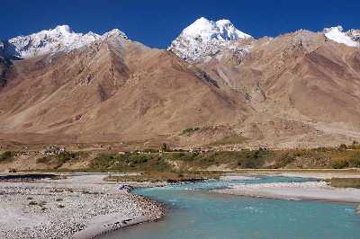

Bhutan, a Buddhist kingdom on the Himalayas’ eastern edge, is known for its monasteries, fortresses (or dzongs) and dramatic landscapes that range from subtropical plains to steep mountains and valleys. In the High Himalayas, peaks such as 7,326m Jomolhari are popular trekking destinations. Paro Taktsang monastery (also known as Tiger’s Nest) clings to cliffs above the forested Paro Valley.
|  |